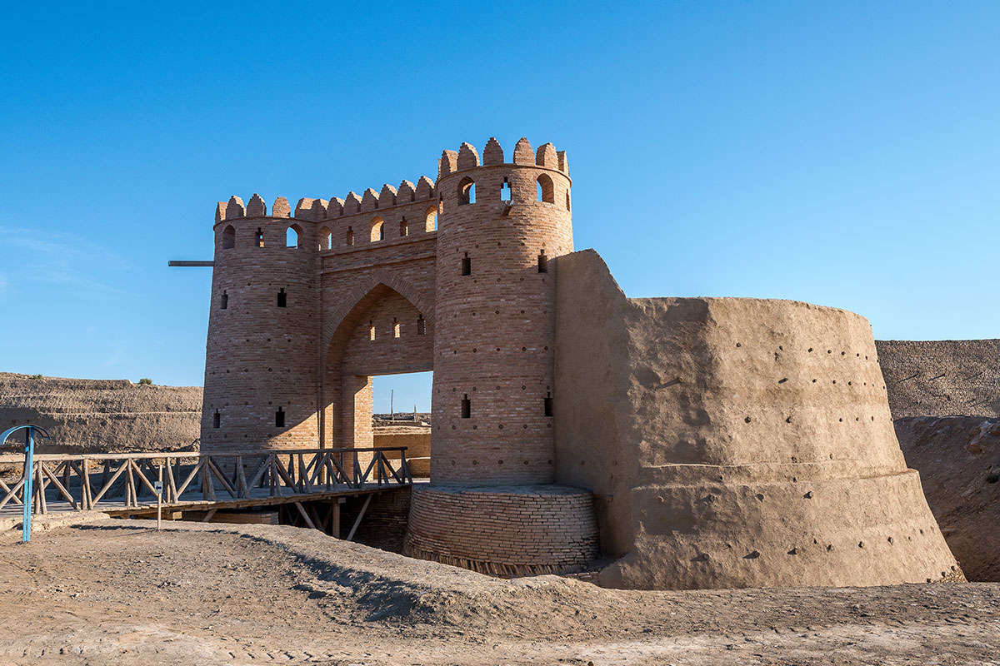
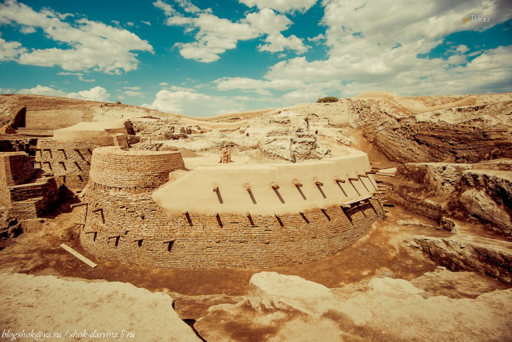
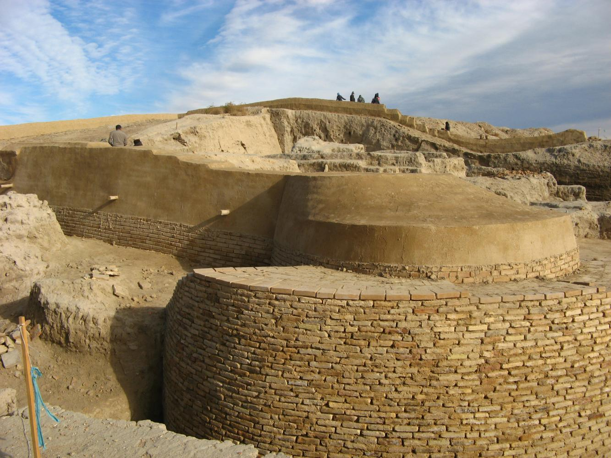

Otyrar, Tarband, Turarband, Turar, Farab - before the Mongol invasion - one of the largest cities in Central Asia, now a settlement in the Otyrar district of the Turkestan region of Kazakhstan. It is located in the lower reaches of the Arys River at its confluence with the Syr Darya, 10 km west of the Timur railway station, near the modern village of Talapty, 57 km south of the city of Turkestan, 120 km northwest of Shymkent.
Gallery



In the two hundred thousandth Otrar, which grew up on the place where the Arys river merged with the Syr Darya, scientists, sages, skillful musicians, foretellers, jewelers settled
Otrar remained the center of the district which occupied a space of "about one day’s journey in all directions", which is many times mentioned by the chroniclers